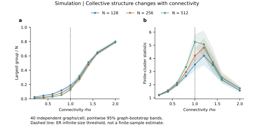

Explore the research亲手探索研究
Examine the evidence behind collective risk: paired network interventions, state-dependent responses, macro-only inference and fair risk comparisons. The foundational experiments remain below.检验协同风险背后的证据：网络干预、状态相关响应、宏观反演与公平风险比较。原有数学基础实验保留在下方。
New research instrument · Mechanism, information and market evidence新增研究交互 · 机制、信息与市场证据
When does coordination become risk?协同在什么环境下转化为风险？
Hold activity fixed and inspect how correlated decisions, return feedback and accommodation change risk. Then see why a higher mean risk need not yield an extra forecasting advantage.固定交易活动，查看相关决策、收益反馈与承接环境如何改变风险；再检验为什么平均风险升高未必带来额外预测优势。
Paired coordination increment at κ = .15 (×10⁻⁶)κ=.15 时的配对风险增量（×10⁻⁶）
Inspect a finding. Test its explanation.看见发现，检验解释。
These views use the saved results of our research. Change the experiment, initial state or prediction horizon to examine what the mechanism explains and where the evidence ends.这里直接使用项目保存的研究结果。切换实验、初始状态或预测期限，查看机理解释了什么，以及证据支持到哪里。
Loading the saved research evidence…正在读取保存的研究证据……
Build the mathematical intuition建立数学直觉
The six original experiments below explain group moments, finite networks, recovery, identification, memory and portfolio risk. Their research views provide exact calculations and saved study results.下方六个原有实验解释群体矩、有限网络、参数恢复、识别边界、记忆和组合风险。“研究视图”进一步提供精确计算与已保存实验结果。
Trade the real market, then test the model回放真实市场，再比较机理
Trade original BTC/USDT history using observed large-order flow, then compare the same account with the mechanism model.根据真实大额成交回放BTC/USDT行情，选择仓位并复盘；也可切换机理模拟，比较模型中的群体变化。
A group shares one action一个群体共享一次行动
The graph is a simulated coordination network. Select a group to see its contribution to S₂.图中为模拟协调网络。选择一个群体，查看它对S₂的贡献。
Keep N, q and λ fixed. If 128 independent traders become eight groups of sixteen, what changes?固定N、q和λ。128名独立交易者变成8个16人群体，会发生什么？
Different groups choose independently. The variance is conditional on the displayed graph.不同群体独立选择动作。这里的方差条件于当前显示的网络。
Read one group inside the formula在公式中看见一个群体
Why the square appears — three mathematical steps平方从何而来：三步数学推导
- Write the aggregate return.写出总收益。
One action ξ is shared by every trader in a connected group. Its mean is zero and its second moment is q.一个连通群体内的交易者共享动作ξ。动作均值为0，二阶矩为q。
- Expand the square.展开平方。
Different groups act independently and have zero mean, so each cross term vanishes. Within a group, the shared action keeps the squared-size term.不同群体的动作独立且均值为0，因此交叉项消失。同群体共享动作，留下规模的平方项。
- Read the observable consequences.读出可观测的结果。
At fixed N and q, regrouping changes S₂ and the variances while leaving mean volume unchanged.固定N和q时，重新分组改变S₂及方差，平均成交量保持不变。
Finite networks around the ER transitionER过渡附近的有限网络
Next, connect the model to the project’s finite-size network scan.接下来，把模型与项目中的有限规模网络扫描联系起来。 Explore the network transition探索网络过渡

When small groups become a large component小群体何时连成大群体
Add possible links to the same seeded graph. Compare that one realization with the project’s 40-draw averages.在同一随机种子下增加可能连边，把单张网络的变化与项目中每个条件40次抽样的均值对照。
One random graph and the ensemble curve一张随机图与整体平均曲线
The line and intervals below replay the saved experiment. The filled point is the live graph above. They answer different questions.下图的曲线和区间来自已保存实验，实心点对应上方即时生成的网络。前者描述平均趋势，后者展示单次随机性。
The mathematical threshold and its finite-size meaning数学阈值与有限规模下的含义
The nonzero solution g describes the asymptotic giant-component fraction in sparse ER graphs for c > 1. Finite N produces a smooth, random crossover. The live graph is a structural model; the project independently redraws it at each observation period.非零解g描述稀疏ER网络在c>1时的渐近巨型连通分量占比。有限N下是带随机性的平滑过渡。这里操作的是网络结构；项目的交易模型在每个观测期独立重采网络。
Build the finite-graph recurrence把有限图递推算出来
An exact small-system calculation: enumerate all graphs for N ≤ 5 and compare the rooted-component probabilities with the analytical recurrence.精确小系统计算：枚举N≤5的全部网络，将指定节点所属群体的概率与解析递推逐项对照。
Pick the root group size选择指定节点的群体规模
Sum the disjoint possibilities把互斥的可能性相加
Why the recurrence closes为什么递推可以闭合
Choose the other k−1 members, require their induced group to be connected, and forbid all k(N−k) links to the outside. Outside edges are unrestricted and their probabilities sum to one. These root-group events partition all graphs.选出其余k−1名成员，要求群体内部连通，再禁止通向外部的k(N−k)条可能连边。外部节点间的边不受限制，其概率总和为1。这些根群体事件划分了全部网络。
Recover parameters from aggregate moments从总体矩恢复模型参数
Use the frozen finite-ER moment curve with known N = 128 and u = 1.使用既有有限ER矩曲线，已知N=128、u=1。
The live window is a model simulation. Project benchmark errors are recorded in D01.当前窗口为模型模拟抽样；项目基准误差见D01。
From measurements back to a parameter从观测量走回模型参数
See the sampling variation看见抽样误差
Each point is one live simulated window at the selected setting. The vertical reference is its generating connectivity.每个点对应所选条件下的一个即时模拟窗口，竖向参考线标出生成数据的真实连接参数。
Why these three moments identify the selected parameters为什么这三个矩能识别所选参数
N and u are known, λ is positive, and A_N(c) is the finite-ER expected S₂ curve. Its monotonicity permits inversion for c. The browser uses the project’s saved interpolation curve.已知N和u，规定λ为正，A_N(c)为有限ER网络的期望S₂曲线。利用单调性反演c；浏览器使用项目保存的插值曲线。
Change the scale. Compare the methods.改变尺度，比较方法
Replay the original ten independent recovery studies. Each scale control reuses the same held-out windows and the originally fitted models.回放原有十组独立恢复研究。不同尺度使用同一批留出窗口和原先拟合的模型，对照已保存的结果。
Keep all ten studies visible保留十组研究的完整对照
Each segment joins the original-scale and selected-scale error in one independent study.每条线连接同一组独立研究在原尺度与所选尺度下的误差。
The normalized representation divides return-magnitude features by return standard deviation and removes that standard deviation as an input. Its output is invariant to this uniform positive rescaling. The volume-based moment estimate of connectivity is also unchanged.归一化表示将收益幅度特征除以收益标准差，并移除标准差本身作为输入，因此对这一统一正尺度变换保持不变。基于成交量的连接参数矩估计也保持不变。
What the normalized features and RBF model contain归一化特征与RBF模型具体是什么
For a nondegenerate window, sᵣ is return standard deviation, Q denotes a quantile and zᵣ is the zero-return fraction. A positive uniform rescaling multiplies the three return numerators and sᵣ by the same b; volume features and the correlation are preserved.对非退化窗口，sᵣ为收益标准差，Q表示分位数，zᵣ为零收益比例。统一正尺度变换使三个收益分子与sᵣ同时乘以b，成交量特征与相关系数保持不变。
The RBF kernel-ridge model weights similarities to training examples. After the training-fitted missing-value treatment, z standardizes features component by component using training means and scales; wⱼ are fitted coefficients and γ controls the distance scale. Raw return rescaling changes these distances. The invariant representation keeps the transformed window at the same feature location.RBF核岭回归根据与训练样本的相似度进行加权。完成按训练集拟合的缺失值处理后，z使用训练均值和尺度逐分量标准化；wⱼ为拟合系数，γ控制距离尺度。原始收益缩放会改变这些距离，尺度不变表示则使变换后的窗口保持在相同特征位置。
What can price and volume distinguish?量价数据能够分辨什么？
Edit a four-trader network. Every action combination is enumerated exactly, so you can compare the complete one-period law.编辑四名交易者的网络。对全部动作组合进行精确枚举，直接比较完整的单期观测分布。
The complete (r, V) law完整的(r,V)分布
q = 0.2, N = 4, u = 1, λ = 0.02
Follow the information through the characteristic function沿特征函数追踪信息
The formula retains the group sizes s_C. A chain and a star both have the size profile [4], giving exactly the same observation law. Removing an internal edge may split the group and change that profile; use the editor to test it.公式保留的是群体规模s_C。链和星的规模列表同为[4]，因此观测分布完全相同。删除连边可能拆开群体并改变规模列表，可用编辑器检验。
All 64 graphs. Five group-size profiles.64种网络，五类群体规模
Enumerate every labelled simple graph on four nodes. Filter by connected-group sizes and inspect the exact observation law associated with that profile.枚举四节点的全部有标号简单图。按连通群体规模筛选，并查看该规模列表对应的精确观测分布。
The node labels are fixed. The same color marks one connected group. Select a graph.节点标签固定，同色表示同一连通群体。点击一张网络查看。
Selected graph and observation law所选网络与观测分布
N = 4, q = 0.2, λ = 0.02, u = 1
Keep every observation. Change the order.保留每个观测，改变时间顺序
Replay one complete saved path from our controlled state experiment. Shuffle whole return–volume pairs and inspect what survives.回放我们状态机制实验中一条完整的已保存路径。把收益与成交量作为整对打乱，观察哪些信息保留下来。
After shuffling whole (r, V) pairs, what happens to the joint distribution and temporal memory?把(r,V)整对打乱后，联合分布和时间记忆会怎样变化？
The same-period distribution同一期的联合分布
Dependence across time跨时间的依赖
Inspect a consecutive segment查看连续时间片段
The lines show 512 consecutive observations; the statistics above use the entire saved path. Teal: original order. Navy: current order.曲线展示连续512个观测，上方统计量使用完整保存路径。青色为原顺序，深蓝为当前顺序。
Why time variation changes the volume-variance formula为什么时变活动改变成交量方差公式
Here m_k = E[qᵏ] and A = E[S₂]; the graph distribution is independent of the activity state. The second term captures activity variation, so total volume variance cannot all be assigned to group structure. Shuffling preserves the whole empirical single-period joint distribution while changing temporal order.其中m_k=E[qᵏ]、A=E[S₂]，网络分布与活动状态独立。第二项来自活动率变化，因此不能把全部成交量方差都归因于群体结构。整对打乱保留完整的经验单期联合分布，同时改变时间顺序。
One path and the repeated experiment一条路径与重复实验
Inspect all ten saved paths. The interval summarizes independent paths; the time-series replay shows the selected individual path.查看全部十条已保存路径。区间汇总独立路径，时间序列回放展示当前选定的单条路径。
Small points: individual paths. Large points and intervals: saved means and approximate path-bootstrap 95% intervals. Select a small point to choose its path.小点为单条路径；大点和区间为保存的均值及路径bootstrap近似95%区间。点击小点可选择路径。
Two permutations preserve different information两类置换保留不同信息
Use the selected path and mechanism. Permuting V alone preserves both marginal distributions and changes the pairing; it also changes the order of V. Permuting whole pairs preserves the empirical joint distribution and changes temporal neighbors.使用所选路径与机制。单独置换V保留两个边际分布，同时改变量价配对和V的时间顺序；整对置换保留经验联合分布，同时改变相邻观测。
How much risk comes from moving together?多少风险来自共同波动？
Compare the same holdings and historical window with full covariance or individual variances alone.在相同持仓与历史窗口下，比较完整协方差与仅保留个体方差的估计。
Nine sector ETFs. Changing η is a covariance counterfactual. Annualization uses 252 trading days.九只行业ETF。改变η是协方差反事实；年化使用252个交易日。
Read the cross-asset terms看清跨资产项
Select two sectors to connect a covariance entry with its contribution to this portfolio’s variance.选择两个行业，把协方差矩阵中的元素与它对当前组合方差的贡献对应起来。
Expand the portfolio-variance formula展开组合方差公式
The diagonal terms describe individual-asset risk. The cross terms retain how asset returns move together in the same historical window.对角项描述个体资产风险，交叉项保留同一历史窗口中资产收益共同变动的信息。
Continue to strategy overlap and allocation继续查看策略重叠与配置
The original four-module laboratory retains all 63 strategy subsets and transaction-cost comparisons. Interface language: Chinese.原四模块实验室保留全部63个非空策略子集与交易费用比较。
Same covariance. Different tails.相同协方差，不同尾部
Replay the six controlled distributions from the covariance-matched experiment. All use the original fixed portfolio and common covariance; each saved estimate uses 50,000 scenarios.回放协方差匹配实验中的六种受控分布。全部使用原实验固定组合与共同协方差，每种保存估计使用50,000个场景。
A quantile and a tail average answer different questions分位点与尾部均值回答不同问题
A 99% VaR marks the 99th loss percentile. A 99% ES averages losses in the worst 1% of scenarios. The horizontal line marks exceedance frequency 1−α; its crossing with a distribution locates the corresponding quantile.99% VaR标出99%损失分位点，99% ES描述最差1%情形的平均损失。图中横线标出1−α的超限频率，与分布曲线的交点对应相应分位点。
The covariance fixes second moments, while these quantities depend on the tail distribution. This controlled comparison uses saved simulation results; the separate real-market model comparison is in the research record.协方差固定二阶矩，这些量还取决于尾部分布。当前受控对照使用已保存的模拟结果，真实市场的方法对照另见研究记录。
Read the full matched-baseline study查看完整同条件方法对照Why covariance can stay fixed while tails change为什么协方差相同，尾部仍可变化
Different latent distributions Z can share zero mean and identity covariance. A fixed linear transform A then gives them the same covariance Σ, while higher moments and tails can differ. The saved experiment also records the numerical covariance-matching error of its actual scenarios.不同潜在分布Z可以共享零均值和单位协方差。经固定线性变换A后，它们具有相同协方差Σ，而高阶矩与尾部仍可不同。保存实验同时记录了实际场景的协方差匹配数值误差。